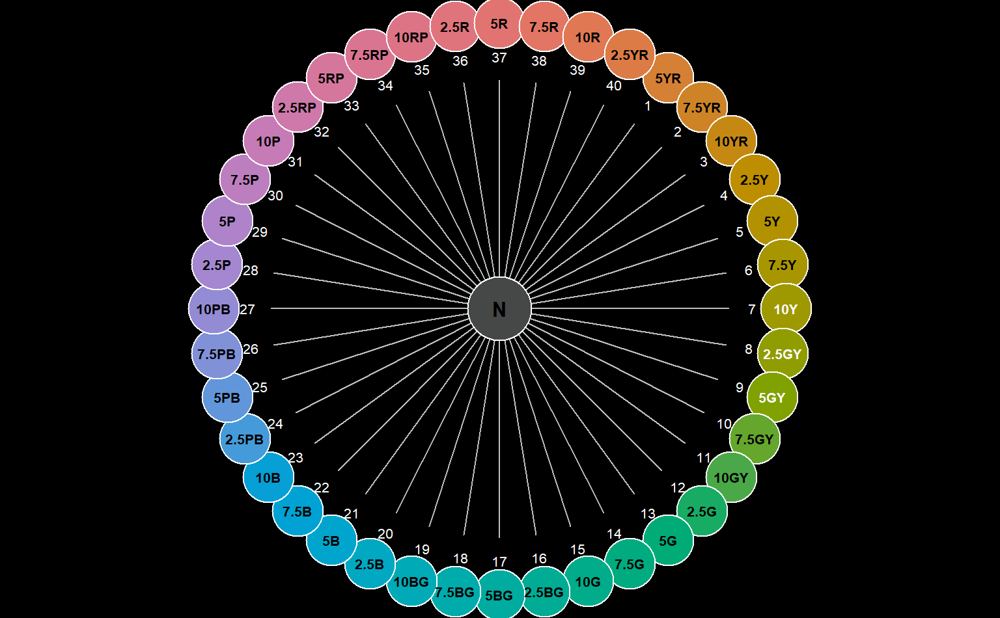

The 40 Munsell hues are typically arranged from 5R to 2.5R moving clock wise on the unit circle. This function matches a vector of hues to positions on that circle, with options for setting a custom origin or search direction.
This function is fully vectorized.
huePosition( x, returnHues = FALSE, includeNeutral = FALSE, origin = "5R", direction = c("cw", "ccw") )
| x | character vector of hues, e.g. c('10YR', '5YR'), optional if |
|---|---|
| returnHues | logical, should the full set of Munsell hues be returned? See details. |
| includeNeutral | logical, add 'N' to the end of the full set of Munsell hues |
| origin | hue to be used as the starting point for position searches (position 1) |
| direction | indexing direction, should be |
A vector of integer hue positions is returned, of the same
length and order as x. If returnHues = TRUE, then all hue
names and ordering are returned and x is ignored.
https://www.nrcs.usda.gov/wps/portal/nrcs/detail/soils/ref/?cid=nrcs142p2_053569
Munsell book of color. 1976. Macbeth, a Division of Kollmorgen Corp., Baltimore, MD.
D.E. Beaudette
# get hue ordering for setting levels of a factor huePosition(returnHues = TRUE) #> [1] "5R" "7.5R" "10R" "2.5YR" "5YR" "7.5YR" "10YR" "2.5Y" "5Y" #> [10] "7.5Y" "10Y" "2.5GY" "5GY" "7.5GY" "10GY" "2.5G" "5G" "7.5G" #> [19] "10G" "2.5BG" "5BG" "7.5BG" "10BG" "2.5B" "5B" "7.5B" "10B" #> [28] "2.5PB" "5PB" "7.5PB" "10PB" "2.5P" "5P" "7.5P" "10P" "2.5RP" #> [37] "5RP" "7.5RP" "10RP" "2.5R" # get hue ordering including N (neutral) huePosition(returnHues = TRUE, includeNeutral = TRUE) #> [1] "5R" "7.5R" "10R" "2.5YR" "5YR" "7.5YR" "10YR" "2.5Y" "5Y" #> [10] "7.5Y" "10Y" "2.5GY" "5GY" "7.5GY" "10GY" "2.5G" "5G" "7.5G" #> [19] "10G" "2.5BG" "5BG" "7.5BG" "10BG" "2.5B" "5B" "7.5B" "10B" #> [28] "2.5PB" "5PB" "7.5PB" "10PB" "2.5P" "5P" "7.5P" "10P" "2.5RP" #> [37] "5RP" "7.5RP" "10RP" "2.5R" "N" # get position of the '10YR' hue, relative to standard origin of '5R' # should be 7 huePosition(x = '10YR') #> [1] 7 # get position of the '10YR' hue, relative to standard origin of '5YR' # should be 3 huePosition(x = '10YR', origin = '5YR') #> [1] 3 # visualize op <- par(mar = c(0, 0, 0, 0), fg = 'white', bg = 'black') huePositionCircle(huePosition(returnHues = TRUE, origin = '5YR'))  par(op)